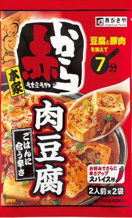

豆腐くんDiary
-日々の豆腐料理日記（鍋以外）-
- 25/8/14
- 25/8/15
- 赤から監修 赤から肉豆腐の素（寿がきや）

- 赤から監修 赤から肉豆腐の素（寿がきや）
-
豆腐のみ
※鍋で作る
→★★★★（4.0）
-
豆腐のみ
※鍋で作る
→★★★★（4.0）
- しっかりうめぇな！！！ライスに乗せるてくうのがうまい！！
そして小さい鍋で作ってうまかった。（素の公式はフライパンでつくり、豚バラいれる。けど豚バラもいれず、フライパンもつかわない。片付けめんどいから。）
過去の自分にオススメできるわ。またかうわ。
- うめぇな！ライスに乗せるてくうのがうまい！！
そして小さい鍋で作れるぜ。液を沸騰させて、豆腐入れて5分で完成。これ思うんだけど、豆腐350gの半分を175g使ったけど、350でええな（1袋2人前分の袋あって、公式は豆腐175g使ってて書いてあるけど、350gの豆腐丸々1個使ってええとおもう。次やってみるぜ。）
- 1回目_2人前をつかう（素は2人前×2回分ある。その中の1回分（2人前）をつかう。）
- 2回目_2人前をつかう（素は2人前×2回分ある。その中の1回分（2人前）をつかう。）_素全部使った。（素：1回分完了）